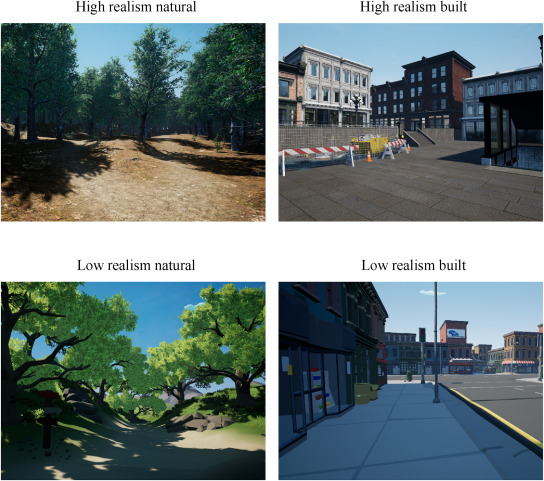

Realismo gráfico
El realismo gráfico es el grado de fidelidad visual del entorno y los objetos virtuales, lo cual puede aumentar la inmersión y mejorar la conexión del estudiante con los contenidos al hacerlos más verosímiles.
En la imagen se presentan distintos niveles de realismo, lo que puede influir en la expectativa del estudiante para percibir detalles en el entorno virtual y también en la confianza de lo que aprendió con RM. Sin embargo, un mayor realismo gráfico usualmente requiere más recursos computacionales.